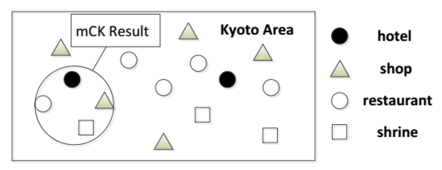

Efficient Algorithms for answering m-Closest Keywords Query
by Tao Guo, Xin Cao, Gao Cong
Presented by Sagar V Dwibhashyam, Abhilash Reddy
Introduction
GPS devices
Massive growth of geo-spatial data and textual data across like
Points of Interests (hotels, restaurants, businesses, etc)
Photos with tags
Geo locations in social photo sharing websites
Check in information
This above information generated has increased the prominence of spatial keyword queries.
Spatial keyword query
It gives the objects which matches the arguments mentioned in the query by using the location information and textual description of the objects existing in the database.
m-closest keywords query(mCK) is one of the type of spatial keyword query.
It is finding a set of closest keywords from the database.
The Existing algorithms almost took 1 hour to answer query containing just 8 keywords in a database of 1 million objects.
M-Closest keywords query
O is defined as the set of all geo-textual objects in the database.
o ∈ O , where o is the each object.
Each object has two attributes o.λ (location) o.ψ(textual).
mCK query processed m keywords.
The output will be diameter of a group of objects.

Problems to be addressed
To find the hardness of the above problem. Prove that mCK query is NP hard by reducing it to the existing 3-SAT problem.
Analyzing a greedy approach to solving the problem.
And then extending this greedy approach to three approximation algorithms which yield better performance.
Then developing a exact algorithm.
mCK query finds the circle with the smallest diameter that encloses a group of objects together covering all query keywords.
Circle is called as “smallest keyword enclosing circle” (SKECq) where q is the query.
SKECq is solvable in polynomial time. But it is not efficient (High time complexity).
Existing Solutions for mCK Queries
bR*-tree based method
Virtual bR*-tree based method
Spatial group keyword query
GKG Algorithm: Greedy Approach
Greedy Keyword Group
Steps:
Find the most infrequent keyword among the keywords in the query q.
Each object that contains this infrequent keyword, the neighboring objects are searched whether if they contain remaining keywords from the query.
So the objects with infrequent keyword and the neighboring objects with query keywords form a group.
Once all the objects with infrequent keywords are processed, which will give us number of group.
Then the group with smallest diameter is chosen as the result.
Approximation ratio: 2
SKEC
MCC (Minimum Covering Circle): is the circle that encloses them with the smallest diameter.
Keywords Enclosing Circle is a circle that encloses a group of objects covering all the given keywords. One with the smallest diameter the Smallest Keywords Enclosing Circle.
Object-across Keywords Enclosing Circle (KECo): Objects, which are on the circumference of the circle.
Obtain group using GKG algorithm, where MCC will serve as a upper bound for the diameter.
In this group, if it covers all query keywords, we return the object.
Else, we find smallest KECo and then update the smallest diameter with this object.
Approximation ratio: 2/√3
SKECa
Given a set of keywords ψ and an object o, if there exists no o-across keywords enclosing circle (KECo) with diameter, D then no KECo exists whose diameter is smaller than D.
We use binary search to find the diameter and position of SKECo.
Here the Upper bound of the algorithm will be the first diameter found and the lower bound will be already be calculated from the greedy algorithm (GKG).
Approximation Ratio: 2/√3 + e, where e is an arbitrary small value.
SKECa+
In the above approach, if, on the earlier processed objects, the circles found are large, the upper bound is loose for sub-sequent search and the checking cost is high.
To overcome this problem, we do binary search on all the objects with infrequent keyword.
In this algorithm, we first do the binary search and then find object across keywords enclosing circle.
EXACT
In the EXACT Algorithm, we use the best features of the previously given algorithms
First, we find the object group using the SKECa+ algorithm.
The diameters of Minimum Covering circle that is used in SKEC algorithm, are used for the above groups.
We check which of these groups have least diameter.
Then return that as a best suitable group.
Datasets
Typical Dataset consists of two files: Doc file and Loc file.
Doc file: Consists of the ID and the textual description keywords.
Loc file: ID, latitude and longitude.
Query file: where you have sample query, which will be processed.
Experimentation
NY -485,059 Objects
116,546 Unique keywords
1,143,013 Total keywords
Query file: where you have the numbers of keywords in the query are varied so evaluate the performance.
Applications: of mCK query
It can be used in detecting geographic locations of web resources such as documents or photos. Given a document or a photo with some tags, we can issue a mCK query using these tags.
mCK query has potential applications for location-based service providers.
Customers of Apple products can submit ‘Apple store subway’ to locate a retailer store to purchase products nearby.
Tourist can find a location where there are places, attractions that she can walk from.